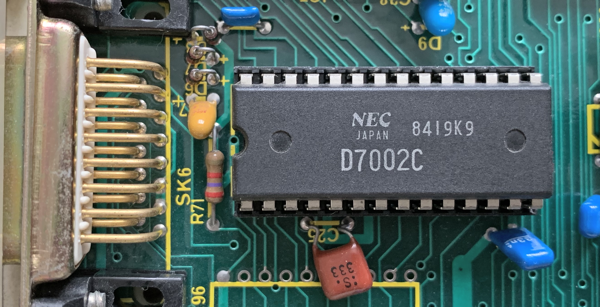

OSBYTE 17; IRQ entry point; BRK handler; IRQ1, IRQ2 handlers; Display string - 681 bytes (4.1%)
- §1. IRQ entry point
- §2. brkRoutine
- §3. Default BRK handler
- §4. rs423Handler
- §5. readFromRS423
- §6. IRQ1 default handler
- §7. irq1CheckACIA
- §8. rs423ErrorDetectedSetAY
- §9. rs423ErrorDetected
- §10. Send to RS-423 / Serial printer as needed
- §11. Service RS-423 interrupt
- §12. Unrecognised Interrupt
- §13. Check for System VIA interrupt
- §14. Check for User VIA interrupt
- §15. Check to see if the interrupt is a Speech interrupt and deal with it
- §16. IRQ1 Interrupt - 100Hz interrupt
- §17. IRQ1 Interrupt - Analogue to Digital Conversion (End of Conversion)
- §18. IRQ1 Interrupt - keyboard
- §19. restoreRegistersAndReturnFromInterrupt
- §20. Default IRQ2 handler - does nothing
- §21. OSBYTE 17 - Start ADC conversions
- §22. Display string on screen
- §23. printMessage
- §24. osbyte129Timed
On Entry: The stack contains status register (flags); high and low bytes of previous program counter. IRQ and BRK causes execution here. If it was a BRK instruction we branch (see .brkRoutine) otherwise we call (indirectly via IRQ1V) the default IRQ1 handler (see .irq1Handler)
.irqEntryPoint = $dc1c STA .interruptAccumulator save A PLA read flags PHA store flags again AND #%00010000 check BRK flag BNE .brkRoutine if (BRK flag set) then branch (to BRK handler) JMP (.vectorIRQ1V) jump to the IRQ1 vector (by default this will jump to .irq1Handler)
.brkRoutine = $dc27 TXA } PHA } save X on stack TSX get stack pointer LDA .stackPage + 3,X get program counter low CLD SEC set carry SBC #1 subtract 1 STA .brkAddressLow and store LDA .stackPage + 4,X get high byte SBC #0 subtract 1 if necessary STA .brkAddressHigh and store LDA .currentlySelectedROM get currently active ROM STA .romNumberActiveLastBRK and store it STX .stackPointerLastBRK store stack pointer LDX #.romServiceCallBreakInstruction } JSR .osbyte143EntryPoint } issue ROM service call 6 (Break) } to ROMs so they get a chance to } respond. at this point .brkAddressLow/High points to the byte after the BRK instruction. ROMS may use BRK for their own purposes LDX .languageROMNumber get current language JSR .selectROM and activate it PLA get back original value of X TAX LDA .interruptAccumulator get back original value of A CLI allow interrupts JMP (.vectorBRKV) and JUMP via BRKV (normally into current language)
This is the default BRK handler that is used at boot time. When BASIC or other language ROM starts it will set up it's own BRK handler instead.
.brkHandler = $dc54 LDY #0 Y=0 to point to byte after BRK JSR .printMessage print message LDA .startupMessageSuppressionAndBootOptions } bit 0 set means: lock up machine } if !BOOT errors from DISC (because } e.g. no language found) ROR } rotate into carry - BCS - if (carry set) then branch (hang the machine!) JSR .OSNEWL print two newlines JSR .OSNEWL JMP .setTapeFSAndFindLanguageROM set tape filing system before entering current language
.rs423Handler = $dc68 SEC set carry ROR .rs423ReadyFlag set RS-423 ready BIT .rs423ControlRegisterCopy check bit 7 of current ACIA control register (aka 'CR7' - ACIA interrupts enabled flag) BPL .rs423SetRequestToSendInactive if (ACIA interrupts disabled) then branch JSR .getRS423InputBufferFreeBytes call subroutine to check if serial buffer is full LDX #0 set X to the value (zero) which will clear bit 5 and 6 of ACIA control register (aka 'CR5' and 'CR6' on the ACIA 6850 datasheet) which means set the 'Request To Send' pin low and transmit interrupt disabled. this is the active state. BCS .rs423BufferSpaceOK if (buffer has enough free space) then branch .rs423SetRequestToSendInactive = $dc78 LDX #%01000000 set X to value which will clear bit 5 and set bit 6 of ACIA control register (aka CR5 and CR6 on the ACIA 6850 datasheet) which means set the 'Request To Send' pin high and transmit interrupt disabled. this is the inactive state. .rs423BufferSpaceOK = $dc7a JMP .writeToACIARequestToSend write to 'Request To Send' value in ACIA
.readFromRS423 = $dc7d LDY .acia6850DataRegister read serial data from ACIA AND #$3A AND %0011 1010 BNE .rs423ErrorDetected if (not zero) then branch LDX .rs423InputSuppressionFlag read RS-423 input suppression flag BNE + if (RS-423 input suppressed) then branch (return) INX X=1 JSR .osbyte153EntryPoint put byte in RS-423 input buffer JSR .getRS423InputBufferFreeBytes count buffer BCC .rs423SetRequestToSendInactive if (buffer is low on free space) then branch back (to make 'Request To Send' inactive) + RTS
When a hardware device generates an IRQ, this IRQ1 handler is executed (as the default handler, see .irqEntryPoint). After saving registers and a suitable return address on the stack, we check three hardware devices in turn, to see what needs attention: 1. Check for ACIA interrupt (see .irq1CheckACIA) 1a. updates RS-423 or Cassette then exit 2. Check for System VIA interrupt (see .irq1CheckSystemVIA) 2a. If VSYNC then update: vsync counter RS-423 counter flashing colours then exit 2b. If Timer 2 times out (Speech timer) (see .irq1CheckSystemVIASpeech) update speech system (send speech data from speech buffer as needed) then exit 2c. If Timer 1 times out (100Hz timer) (see .irq1CheckSystemVIA100HzTimer) then update: the clock the countdown timer event the INKEY timeout counter sound speech ACIA printer keyboard ADC conversion then exit 3. Check for User VIA interrupt (see .irq1CheckUserVIA) 3a. updates a parallel printer then exit Unrecognised interrupts are passed on to IRQ2V, allowing user code to process it.
.irq1Handler = $dc93 CLD clear decimal flag LDA .interruptAccumulator } PHA } TXA } push original A,X,Y register onto } stack PHA } TYA } PHA } LDA #>(.restoreRegistersAndReturnFromInterrupt-1) } PHA } push return address onto stack LDA #<(.restoreRegistersAndReturnFromInterrupt-1) } RTS will now exit to } } .restoreRegistersAndReturnFromInterrupt PHA } CLV clear V flag (meaning: check the ACIA generated the interrupt) fall through...
Check for ACIA Interrupt or Update ACIA Two modes of operation (V CLEAR and V SET) On Entry: V CLEAR means check that the ACIA generated the interrupt, and if so then update the RS-423 or cassette as needed V SET means just update the RS-423
.irq1CheckACIA = $dca2 LDA .acia6850StatusRegister get the ACIA status register BVS + if ('V SET') then branch (don't check the ACIA generated the interrupt) BPL .irq1CheckSystemVIA if (ACIA didn't generate the interrupt) then branch (check the next thing) + LDX .rs423TimeoutCounter read RS-423 timeout counter DEX decrement it BMI .rs423HasControl if (timed out) then branch BVS .exit13 if ('V SET') then branch (return) JMP .updateACIA update ACIA
.rs423ErrorDetectedSetAY = $dcb3 LDY .acia6850DataRegister read ACIA data ROL ASL fall through...
.rs423ErrorDetected = $dcb8 TAX X=status byte shifted right once TYA A=character received LDY #.eventRS423ErrorDetected Y=7 JMP .eventEntryPoint check and service EVENT 7 RS-423 error
§10. Send to RS-423 / Serial printer as needed.
If we have a non-empty RS-423 output buffer, then send the next byte, reset the RS-423 timeout counter and exit. If we have a serial printer, update the printer buffer empty flag. If not empty then send the byte to the printer (and also reset the RS-423 timeout counter).
.writeToACIA = $dcbf LDX #.bufferNumberRS423Output } JSR .osbyte145EntryPoint } read from RS-423 output buffer BCC + if (buffer isn't empty) then branch forward RS-423 buffer empty LDA .printerDestination read printer destination CMP #2 is it serial printer? BNE .rs423Handler if (not a serial printer) then branch (it must be RS-423) serial printer INX X=3 (.bufferNumberPrinter) JSR .osbyte145EntryPoint read printer buffer ROR .printerBufferEmptyFlag update the empty flag (put carry into bit 7) BMI .rs423Handler if (printer buffer is empty) then branch + STA .acia6850DataRegister pass either printer or RS-423 data to ACIA LDA #$E7 } reset timeout counter to STA .rs423TimeoutCounter } count up 25 vsyncs (0.5 seconds) .exit13 = $dcdd RTS
§11. Service RS-423 interrupt.
See NAUG Section 8.4 - Serial system interrupts, Page 126 On Entry: A = ACIA status byte Two modes of operation: V CLEAR - read from RS-423; handle DCD (Data Carrier Detect); write to RS-423; handle unrecognised interrupt V SET - handle DCD; write to RS-423
.rs423HasControl = $dcde AND .rs423IRQBitMask AND with ACIA bit mask (normally $FF) LSR shift right to put bit 0 of ACIA status (receive interrupt) in carry BCC + if (not a receive interrupt) then branch (skip read) BVS + if (V SET mode) then branch (skip read) LDY .rs423ControlRegisterCopy read copy of ACIA control register BMI .readFromRS423 if (ACIA 6850 interrupts enabled) then branch + LSR shift, put bit 1 of ACIA status into carry ROR rotate, put bit 2 of ACIA status into carry BCS .rs423ErrorDetectedSetAY if (Data Carrier Detected interrupt) then branch BMI .writeToACIA if (ACIA status bit 1 is set) then branch (transmit interrupt) BVS .exit13 if (V SET mode) then branch (exit) fall through...
When we have an interrupt that we don't understand, pass it to the ROMs to see if they can handle it. If not, then pass it on to the IRQ2 vector.
.unrecognisedInterrupt = $dcf3 LDX #.romServiceCallUnrecognisedInterrupt } JSR .osbyte143EntryPoint } issue paged ROM service call for } 'unrecognised interrupt' BEQ .exit13 if (a ROM recognises it) then branch (exit) PLA otherwise remove address from stack PLA PLA and restore Y, X, and A TAY PLA TAX PLA STA .interruptAccumulator .interruptAccumulator=A JMP (.vectorIRQ2V) and offer to the user via IRQ2V
§13. Check for System VIA interrupt.
Check if the System VIA triggered the interrupt and deal with it.
.irq1CheckSystemVIA = $dd06 LDA .systemVIAInterruptFlagRegister read system VIA interrupt flag register BPL .irq1CheckUserVIA if (the System VIA has not caused interrupt) then branch (try the next thing) AND .systemVIAIRQBitMask mask with VIA bit mask (normally $FF) AND .systemVIAInterruptEnableRegister and interrupt enable register ROR } ROR } rotate right twice to check for } IRQ 1 (vsync) BCC .irq1CheckSystemVIASpeech if (not vsync) then branch (to check for speech) vsync interrupt DEC .verticalSyncCounter decrement vertical sync counter LDA .rs423TimeoutCounter A = RS-423 Timeout counter BPL + if (positive) then branch INC .rs423TimeoutCounter increment counter + LDA .videoULAFlashingColourIntervalCount load flash counter BEQ .doneFlashingColours if (flashing system is not in use) then branch DEC .videoULAFlashingColourIntervalCount decrement counter BNE .doneFlashingColours if (not time for a colour to flash) then branch (to continue processing) ready to flash colour LDX .videoULAFirstFlashingColourInterval get mark period count in X LDA .videoULAVideoControlRegisterCopy current Video ULA control setting in A LSR shift bit 0 into C BCC .restoreAndFlipBit if (first colour is in effect) then branch LDX .videoULASecondFlashingColourInterval get second colour period count in X .restoreAndFlipBit = $dd34 ROL restore bit EOR #1 and invert it JSR .setVideoULA then set colour STX .videoULAFlashingColourIntervalCount reset the count until the next flash .doneFlashingColours = $dd3d LDY #.eventStartOfVSync Y=event type: start of vsync JSR .eventEntryPoint call the event LDA #%00000010 A=bit set to clear the vsync interrupt flag JMP .storeToSystemVIAIFR clear interrupt and exit
§14. Check for User VIA interrupt.
Check if the User VIA triggered the interrupt and deal with it (check for parallel printer in particular).
.irq1CheckUserVIA = $dd47 LDA .userVIAInterruptFlagRegister check User VIA interrupt flags register BPL .unrecognisedInterrupt if (User VIA did not call interrupt) then branch AND .userVIAIRQBitMask } AND .userVIAInterruptEnableRegister } ROR } ROR } check for User IRQ bit 1 set } (printer interrupt) BCC .unrecognisedInterrupt if (not printer interrupt) then branch LDY .printerDestination get printer type DEY decrement BNE .unrecognisedInterrupt if (not a parallel printer) then branch deal with parallel printer LDA #%00000010 interrupt bit 1 (printer interrupt) STA .userVIAInterruptFlagRegister clear interrupt bit 1 STA .userVIAInterruptEnableRegister enable interrupt bit 1 LDX #.bufferNumberPrinter } JMP .openPrinterChannel } output data to parallel printer
§15. Check to see if the interrupt is a Speech interrupt and deal with it.
The speech processor chip has an internal 16 byte buffer to hold incoming data. When speaking, this buffer will run out every 50 milliseconds. When the buffer becomes half full, an interrupt occurs. In fact, a speech interrupt is generated when any of the following occur: (1) End of speech processing (2) Speech hardware is low on data (half full, i.e. 8 bytes or less), indicating more phrase data needs to be supplied for the Speak External command. (3) Speech hardware is empty of data, indicating the CPU failed to supply phrase data fast enough for the Speak External command. (4) At the start of a Speak External instruction, if speech hardware is not empty of data. We call .updateSpeech in the 100Hz interrupt to keep the speech hardware regularly supplied with data. On Entry: A = System VIA interrupt flag shifted right twice
.irq1CheckSystemVIASpeech = $dd69 ROL } rotate left twice to get back to ROL } original interrupt flag register } alignment of bits ROL rotate left to get bit 5 into bit 6 ROL rotate left to get bit 6 into bit 7 BPL .irq1CheckSystemVIA100HzTimer if (bit 5 of system via IFR is clear, i.e. it's not timer 2, used for the speech interrupt) then branch deal with speech LDA #%00100000 } clear bit 5, the timer 2 LDX #0 } interrupt STA .systemVIAInterruptFlagRegister } STX .systemVIATimer2CounterHigh clear Timer 2 (write to high byte) .updateSpeech = $dd79 LDX #8 } loop counter (shifted right on STX .tempStoreFB } each loop iteration) on each speech update we loop a maximum of 4 times to feed the speech chip with up to 4 bytes of new data from the CPU's speech buffer. .feedSpeechChipWithDataLoop = $dd7d check our speech buffer, see if there's more data JSR .osbyte152EntryPoint examine buffer status for buffer 8 (the speech buffer), C set if buffer is empty, otherwise A is byte read. ROR .speechBufferEmptyFlag shift carry into bit 7 - store as the 'speech buffer empty' bit BMI .exit14 if (top bit is set, i.e. set buffer is empty) then branch (return) TAY Y = A = next byte to be removed from speech buffer BEQ + check if speech chip is ready? JSR .osbyte158EntryPoint read byte from speech chip BMI .exit14 if (top bit set) then branch (exit) + read three bytes from the speech buffer: <ROM number> <2 byte address> JSR .osbyte145EntryPoint read a byte from CPU's speech buffer STA .currentSpeechPHROMOrROMNumber store ROM number JSR .osbyte145EntryPoint read another byte STA .romAddressHigh store ROM address JSR .osbyte145EntryPoint read another byte STA .romAddressLow store ROM address LDY .currentSpeechPHROMOrROMNumber Y=ROM / PHROM number BEQ .writeROMAddressToSpeechProcessor if (current logical speech PHROM or ROMFS Number is zero) then branch BPL .writeCommandAndAddressToSpeechProcessor if (+ve) then branch BIT .currentSpeechPHROMOrROMNumber check bit 6 of PHROM or ROM number BVS + if (PHROM or ROM number has bit 6 set) then branch JSR .writeAddressAndROMNumberToSpeechProcessor continue for more speech processing BVC .enableOrDisableSpeech ALWAYS branch + ASL .romAddressLow double ROM address ROL .romAddressHigh JSR .readFromPHROM and call .readFromPHROM .enableOrDisableSpeech = $ddb2 LDY .speechSuppressionStatus get speech enable/disable flag whose values equate to speech processor commands: $50 = 'speak'; $20 = 'nop' JMP .osbyte159EntryPoint write to speech processor .writeCommandAndAddressToSpeechProcessor = $ddb8 JSR .osbyte159EntryPoint write ROM number .writeROMAddressToSpeechProcessor = $ddbb LDY .romAddressLow get address pointer in Y JSR .osbyte159EntryPoint write address to speech chip LDY .romAddressHigh get address pointer high in Y JSR .osbyte159EntryPoint write address to speech chip LSR .tempStoreFB update loop counter BNE .feedSpeechChipWithDataLoop loop back .exit14 = $ddc9 RTS
§16. IRQ1 Interrupt - 100Hz interrupt.
.irq1CheckSystemVIA100HzTimer = $ddca BCC .irq1CheckSystemVIAADCEndConversion bit 6 is in carry. if (there is no bit 6 interrupt) then branch LDA #%01000000 } STA .systemVIAInterruptFlagRegister } clear interrupt 6 Update the 5 byte clock. There are 2 clock stores, at .timeClockA and .timeClockB. These are updated by adding 1 to the current clock and storing the result in the other, the direction of transfer being changed each time of update. This ensures that at least 1 clock store is valid at any call as the current clock is only read. Other methods would cause inaccuracies if a clock was read whilst being updated. LDA .timeClockSwitch get current system clock pointer (5 or 10) TAX put old system clock pointer in X EOR #$0F invert bits so it toggles between 5 and 10 PHA remember A TAY put new system clock pointer in Y - LDA .timeClockA-1,X get current system clock value ADC #0 increment it (carry is set on the first iteration of the loop, thereafter carry is set as needed based on this increment) STA .timeClockA-1,Y store result in new copy DEX decrement X BEQ + if (finished) then branch (loop ends) DEY decrement Y BNE - and go back and do next byte + PLA get back new clock pointer STA .timeClockSwitch and store back in clock pointer Update countdown interval timer. An EVENT is generated when it times out. LDX #5 set loop counter - INC .countdownIntervalTimer - 1,X increment byte for countdown timer BNE + if (done updating timer bytes) then branch DEX decrement loop counter BNE - if (not finished looping) do it again LDY #.eventIntervalTimerCrossingZero at this point all the interval timer bytes are zero JSR .eventEntryPoint call EVENT 5 interval timer Update INKEY timeout. Used when reading a key within a time limit. + LDA .inkeyTimeoutCounterLow get low byte of inkey countdown timer BNE + if (inkey timer is non-zero) then branch forward LDA .inkeyTimeoutCounterHigh get high byte of inkey countdown timer BEQ ++ if (inkey timer is zero) then branch forward DEC .inkeyTimeoutCounterHigh decrement high byte + DEC .inkeyTimeoutCounterLow and decrement low byte Update sound. ++ BIT .soundIsUpdatingFlag check bit 7 of sound flag (this bit is set while processing sound interrupt. check so we don't try to process a second sound interrupt while still processing the first) BPL + if (bit clear; still processing) then branch (skip forward) INC .soundIsUpdatingFlag increment to 0 (to signify that sound is being processed here) CLI allow interrupts briefly JSR .processSoundInterrupt process sound SEI disable interrupts DEC .soundIsUpdatingFlag decrement 'sound is updating' flag back to $FF (this signifies that we are done processing the sound) Update speech. + BIT .speechBufferEmptyFlag check speech buffer empty flag BMI + if (speech buffer is empty) then branch (skip speech) JSR .osbyte158EntryPoint read speech processor status register EOR #%10100000 flip two bits CMP #%01100000 check BCC + if (result < $60) then branch JSR .updateSpeech process speech Update ACIA. + BIT .allBitsSet set V flag JSR .irq1CheckACIA update ACIA Update keyboard. LDA .lastKeyPressedInternal } check if a key is currently ORA .firstKeyPressedInternal } pressed AND .enableKeyboardInterruptProcessingFlag ignore key presses if the flag is zero BEQ + if (no key pressed or we should ignore keys pressed) then branch (ignore keyboard) SEC set carry JSR .keyboardInterruptRoutine handle keyboard interrupt Update printer. + JSR .printerServiceCallIfNotEmpty check for data in printer buffer Update ADC conversion. BIT .adcDataStatusRegister check ADC status register BVS .handleADCConversionEnds if (bit 6 is set, i.e. ADC not busy) then branch RTS
§17. IRQ1 Interrupt - Analogue to Digital Conversion (End of Conversion).
See .osbyte17EntryPoint
.irq1CheckSystemVIAADCEndConversion = $de47 ROL put original bit 4 from .systemVIAInterruptFlagRegister into bit 7 of A BPL .irq1CheckSystemVIAKeyboard if (not an ADC conversion interrupt) then branch .handleADCConversionEnds = $de4a LDX .adcCurrentChannel get current ADC channel BEQ .clearInterrupt4 if (zero) then branch (clear interrupt and exit) LDA .adcDataLowByte read low data byte STA .lowByteLastByteFromADCChannel1 - 1,X store it in memory LDA .adcDataHighByte get high data byte STA .highByteLastByteFromADCChannel1 - 1,X and store it in high byte STX .adcLastChannelRead store last ADC channel read LDY #.eventADCConversionComplete handle event 3 conversion complete JSR .eventEntryPoint DEX decrement X BNE + if (X != 0) then branch forward LDX .maximumADCChannelNumber get highest ADC channel present + JSR .startADCConversion start new conversion .clearInterrupt4 = $de6c LDA #%00010000 reset interrupt 4 .storeToSystemVIAIFR = $de6e STA .systemVIAInterruptFlagRegister RTS
§18. IRQ1 Interrupt - keyboard.
.irq1CheckSystemVIAKeyboard = $de72 ROL get original bit 0 in bit 7 position ROL ROL ROL BPL + if (not a keyboard interrupt) then branch (skip keyboard processing) JSR .keyboardInterruptRoutine scan keyboard LDA #%00000001 } BNE .storeToSystemVIAIFR } reset interrupt 0 and return + JMP .unrecognisedInterrupt
§19. restoreRegistersAndReturnFromInterrupt.
.restoreRegistersAndReturnFromInterrupt = $de82 PLA restore AXY registers TAY PLA TAX PLA STA .interruptAccumulator store A fall through...
§20. Default IRQ2 handler - does nothing.
.irq2Handler = $de89 LDA .interruptAccumulator get back original value of A RTI return
§21. OSBYTE 17 - Start ADC conversions.

Analogue to digital conversion is performed by the ADC 7002 chip. It has four channels of data that can be read. This is often used to read an analogue joystick. This starts the conversion happening. They will keep happening until OSBYTE 16 with X=0 is called. OSBYTE 16 selects the range of channels to convert (0-4). See .osbyte16EntryPoint. OSBYTE 190 selects the ADC conversion type (8 or 12 bits). See .adcConversionType. Twelve bit conversion is the default (which takes about 10ms). Eight bit conversions are faster at around 4ms. The ADC 7002 generates an interrupt when the conversion is complete, and the IRQ1 handler stores the two byte result (in .lowByteLastByteFromADCChannel1 and upwards). It also starts the next conversion. See .irq1CheckSystemVIAADCEndConversion. OSBYTE 128 reads the latest converted ADC value (X=ADC channel 1-4). See .osbyte128EntryPoint. OSBYTE 128 can also read the state of the fire buttons. (X=0). See .osbyte128EntryPoint. These are encapsulated in the BASIC ADVAL command. On Entry: X = ADC channel number (1-4) Y = 0
.osbyte17EntryPoint = $de8c STY .adcLastChannelRead set last channel to finish conversion (to zero) .startADCConversion = $de8f CPX #5 BCC + if (X < 5) then branch (skip forward) LDX #4 X=4 (maximum) + STX .adcCurrentChannel store it as current ADC channel LDY .adcConversionType get conversion type DEY decrement TYA A=Y AND #%00001000 clear to zero except for bit 3 set indicates a 12 bit conversion CLC } add the ADC channel (1-4) ADC .adcCurrentChannel } then subtract one, effectively SBC #0 } adding channel (0-3) into bits 0-2 STA .adcStartConversionRegister store value to start ADC conversion RTS
§22. Display string on screen.
Display the boot message (e.g. 'BBC Computer 32K') and language ROM title (e.g. 'BASIC') On Entry: Y = offset from page of .vduBaseAddress to start of string -1
.displayString = $dea9 LDA #>.vduBaseAddress Start of string area (high byte) .displayStringAY = $deab STA .displayStringAddressHigh store it LDA #0 Low byte is zero (we use Y to index to correct string) STA .displayStringAddressLow store it and start loop fall through...
.printMessage = $deb1 INY print character in string LDA (.displayStringAddressLow),Y pointed to by $FD/E JSR .OSASCI print it expanding Carriage returns TAX store A in X BNE .printMessage and loop again if not zero RTS
On Entry: X/Y holds the time limit
.osbyte129Timed = $debb STX .inkeyTimeoutCounterLow store time in INKEY countdown timer STY .inkeyTimeoutCounterHigh which is decremented every 10ms LDA #255 BNE .readCharacterTimed ALWAYS branch